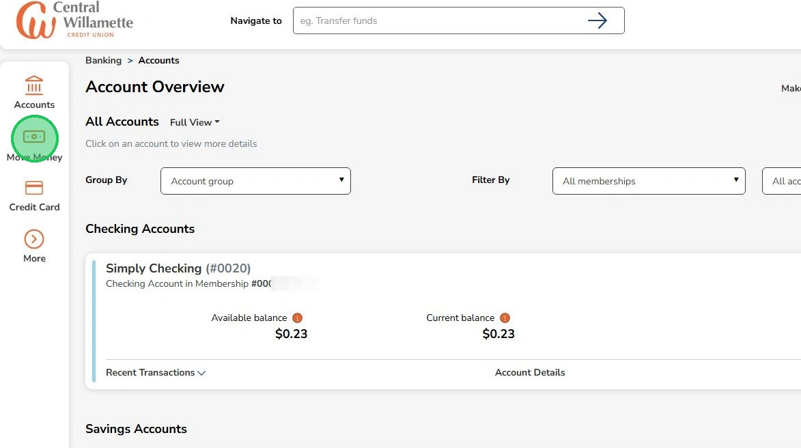
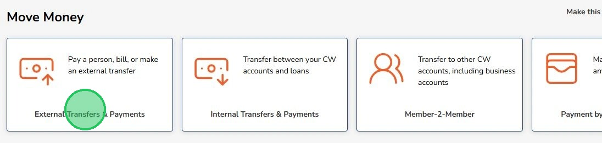
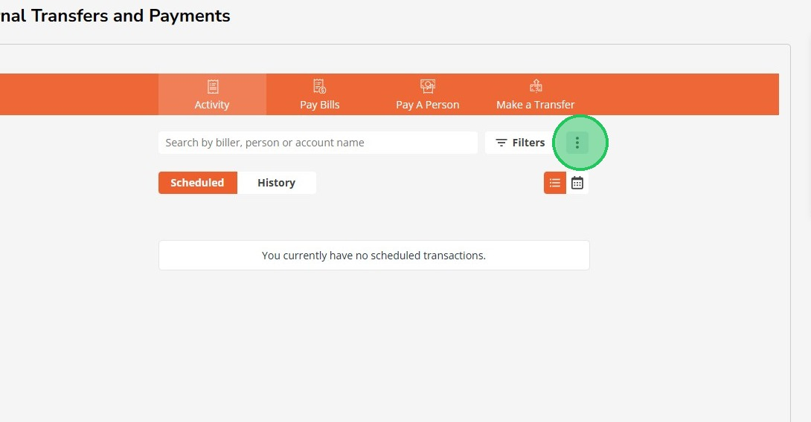
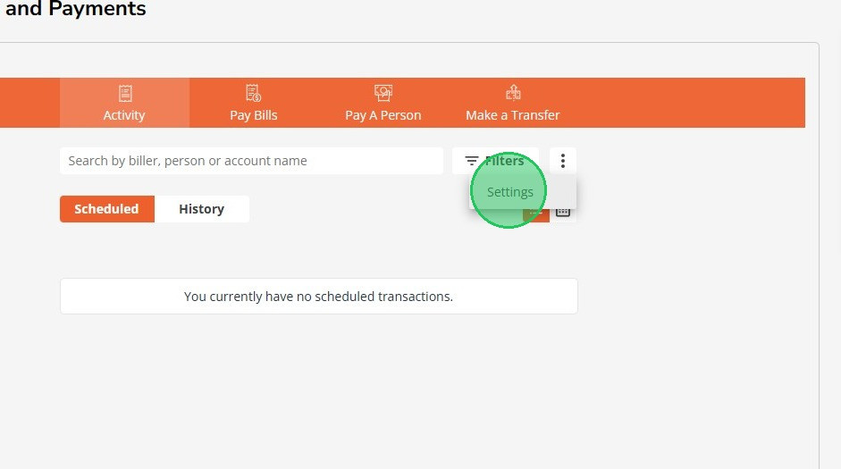
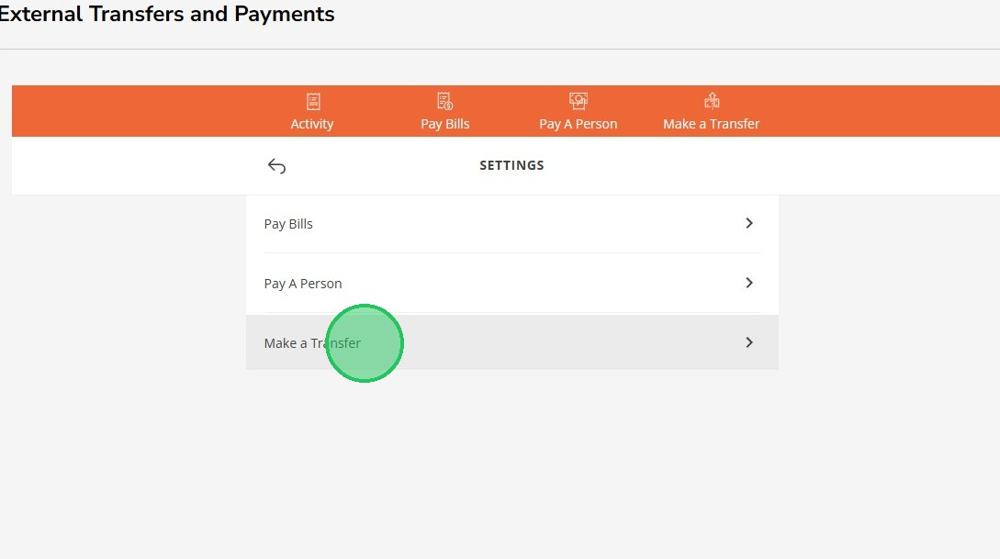
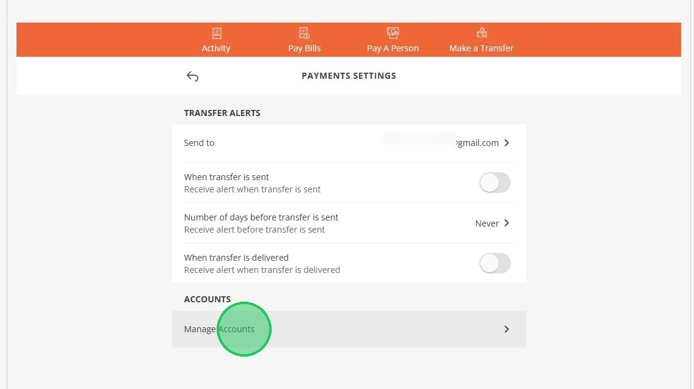
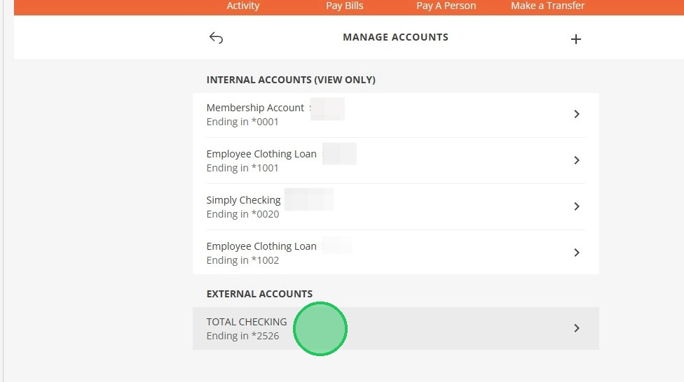
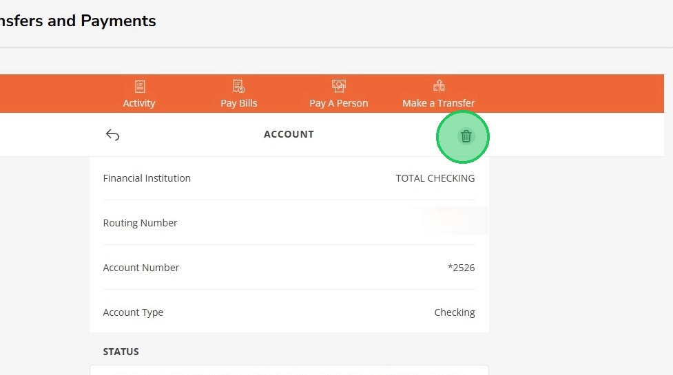
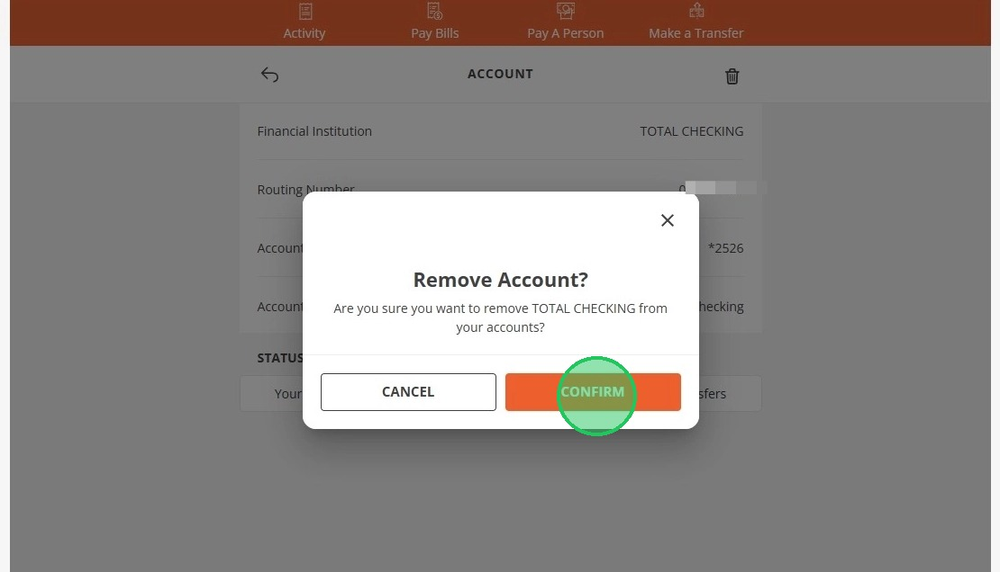

Deleted Saved External Accounts
This guide will help you remove saved external accounts from your online banking.
1
Click "Move Money"

2
Click "External Transfers & Payments"

3
To delete an external account, select the three dots

4
Click "Settings"

5
Click "Make a Transfer"

6
Select "Manage Accounts"

7
Select which External Account you want to manage

8
Select the trash can icon

9
Click "Confirm"
